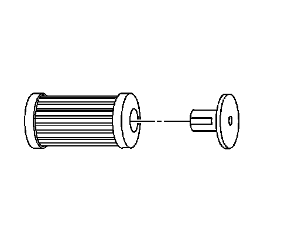
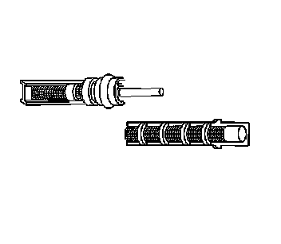
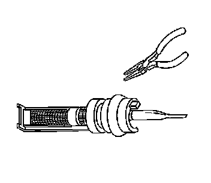

Flushing
FLUSHING
TOOLS REQUIRED
- J 43600 ACR 2000 Air Conditioning Service Center
- J 45268 Flush Adapter Kit
- J 41447 Leak Detection Dye
- J 42220 Universal 12V Leak Detection Lamp
IMPORTANT: Flushing with the ACR 2000 is not intended to remove metal from the A/C system.
Flushing is intended to remove the following contaminants:
- Contaminated polyalkylene glycol (PAG) oil
- Desiccant, following a desiccant bag failure
- Overcharge of PAG oil
- Refrigerant contamination
1. IMPORTANT: Warmer engine or ambient temperature decreases the refrigerant recovery time during the A/C flush procedure.
Recover the refrigerant. Refer to Refrigerant Recovery and Recharging. Refrigerant Recovery and Recharging
2. Remove the orifice tube.
3. Connect the A/C lines with the orifice tube removed.
4. Remove the A/C compressor.
5. Inspect the end of the suction hose for a suction screen.
6. Remove the suction screen, if installed.
7. Install J 45268-4 to the A/C compressor suction hose.
8. Install J 45268-5 to the A/C compressor discharge hose.

9. Forward flow refrigerant flushing is recommended for contaminated refrigerant or PAG oil.Perform the following procedure:
1. IMPORTANT: The filter inside the J 45268-1 is serviceable. Remove and discard the check valve from the filter.
Service the filter with ACDelco P/N GF 470, before each flush.Connect the J 45268-1 flush filter to the suction port of the J 45268-4 flush adapter.
2. Connect the blue hose from the J 43600 to the J 45268-1 flush filter adapter.
3. Connect the red hose from the J 43600 to the J 45268-5 flush adapter.
10. Reverse flow refrigerant flushing is recommended for desiccant bag failure. Perform the following procedure and replace the accumulator when the flush procedure is complete.
1. IMPORTANT: The filter inside the J 45268-1 is serviceable. Remove and discard the check valve from the filter.
Service the filter with AC P/N GF 470, before each flush. Connect the J 45268-1 flush filter to the discharge port of the J 45268-5 flush adapter.
2. Connect the blue hose from the J 43600 to the J 45268-1 flush filter adapter.
3. Connect the red hose from the J 43600 to the suction port of the J 45268-4 flush adapter.
11. IMPORTANT: Close the valve on the external refrigerant tank, before starting the flush process.
Flush the front A/C system. Follow the instructions supplied with the J 43600.
12. IMPORTANT: Flush the front A/C system before flushing the auxiliary A/C system.
If the vehicle is equipped with rear A/C, flush the auxiliary A/C system separately.

13. Cut the orifice tube frame and screen, enough to access the end of the orifice tube. Pinch off the orifice tube.
14. IMPORTANT: Pinch off the orifice tube in order to prevent refrigerant flow to the front system during the auxiliary system flush.

Install the pinched orifice tube.
15. Remove the auxiliary thermal expansion valve (TXV).
16. Install the J 45268-104.
17. IMPORTANT: The auxiliary evaporator core can be flushed without totally reassembling into the auxiliary HVAC module.
Install the auxiliary evaporator core to the A/C lines.
18. Raise the vehicle. Refer to Vehicle Lifting.
19. Connect the auxiliary A/C lines to the auxiliary evaporator core.
20. Lower the vehicle.
21. Flush the auxiliary A/C system. Follow the instructions supplied with the J 43600.
22. Raise the vehicle. Refer to Vehicle Lifting.
23. Remove the auxiliary A/C lines from the auxiliary evaporator core.
24. Lower the vehicle.
25. Remove the J 45268-104.
26. Inspect the TXV for debris.Clean or replace as needed.
27. Install the auxiliary TXV.
28. Remove the J 45268-4 from the A/C compressor suction hose.
29. Remove the J 45268-5 from the A/C compressor discharge hose.
30. IMPORTANT: Flushing will remove all the PAG oil from the A/C system.
The A/C system must be replenished with the correct amount of PAG oil.
If the removed A/C compressor is being reinstalled, perform the following procedure:
- Drain the PAG oil from the A/C compressor.
- Rotate the compressor input shaft to assist in draining the PAG oil from the A/C compressor.
- Add the total system capacity of PAG oil to the A/C compressor. Refer to Refrigerant System Capacities.
31. If you will replace the A/C compressor after flushing the system, perform the following procedure:
1. Determine if the new service compressor is shipped with PAG oil. Refer to the Refrigerant System Capacities.
2. If the service compressor is shipped with PAG oil, DO NOT drain the new PAG oil from the compressor.
3. Deduct the amount of PAG oil shipped with the service compressor from the amount of PAG oil listed in the capacities table. Refer to Refrigerant System Capacities.
4. Add the calculated amount to the compressor, as needed.
32. IMPORTANT: Flushing will remove the fluorescent leak detection dye from the A/C system.
Add one bottle of J 41447 directly to the A/C compressor.
33. Install the A/C compressor.
34. Install a new orifice tube.
35. Evacuate and recharge the A/C system. Refer to Refrigerant Recovery and Recharging. Refrigerant Recovery and Recharging
36. Leak test the fittings using J 42220.